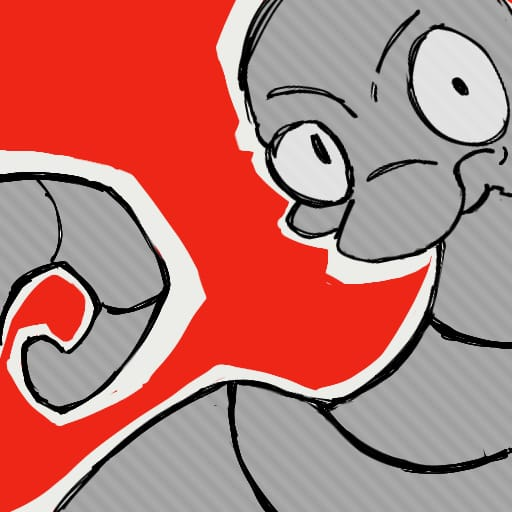
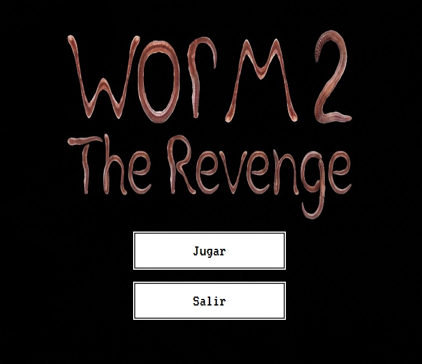
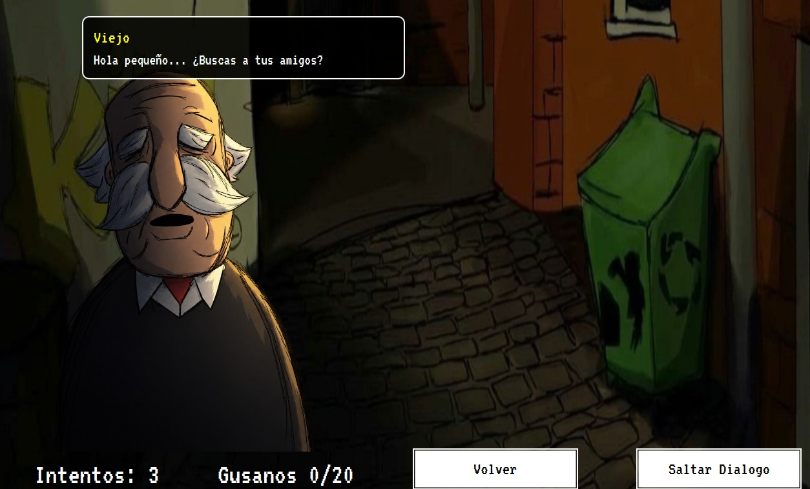
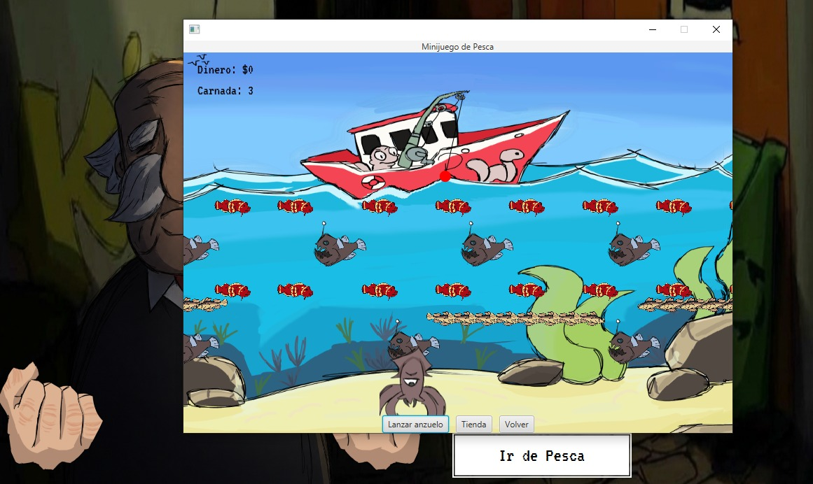
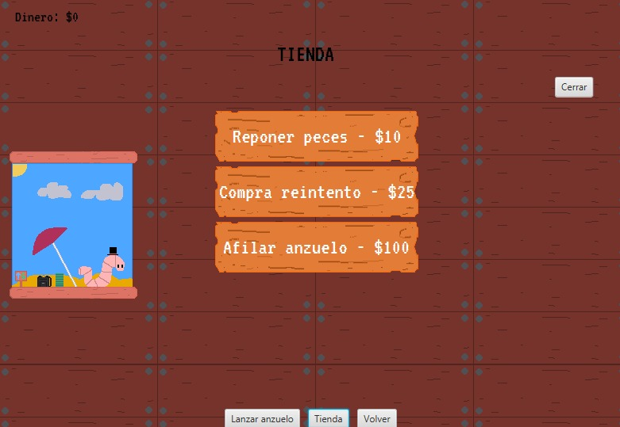
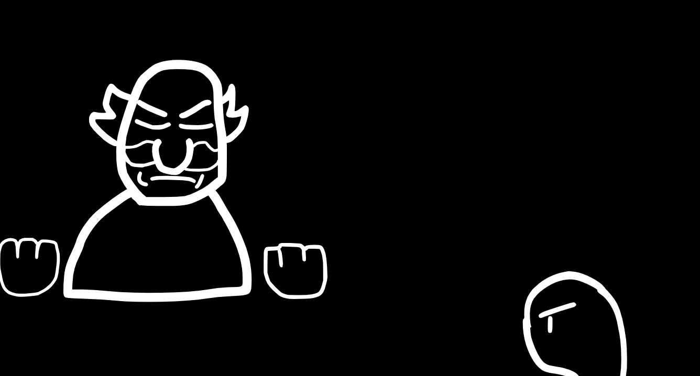
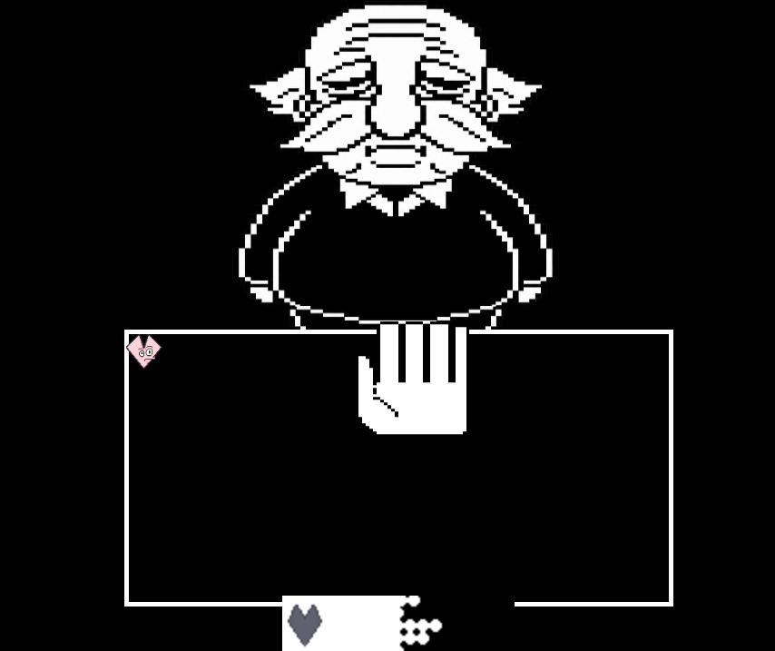

Sobre el proyecto
Worms: 2 The Revenge es una secuela hipotética y absurda del videojuego Worms, creado originalmente por Sgu1t. La idea surgió como una propuesta para realizar una versión mejorada del juego original, desarrollado en Scratch, y llevarla a cabo como parte de un proyecto escolar cuyo objetivo era desarrollar un videojuego programado enteramente en Java.
El proyecto fue presentado en la muestra anual de proyectos de nuestra institución. Trabajé en conjunto con otros dos compañeros, encargándome principalmente del diseño de la lógica del juego base, el menú principal, la Boss Fight, algunos sprites y la implementación de efectos de sonido.

¿De qué trata?
Se trata de un sencillo juego de azar en el que un anciano presenta dos manos y el jugador debe descubrir en cuál de ellas se encuentra el gusano para poder continuar.
Disponés de solamente tres intentos para cumplir tu objetivo y necesitás encontrar al menos 20 gusanos para conseguir el final bueno del juego.
Tratándose de un 50/50... ¿será algo imposible?
Si las probabilidades no están de tu lado, siempre podés recurrir al minijuego de MiniPesca, donde tendrás la oportunidad de pescar algunos buenos ejemplares que funcionan como dinero. Podrás utilizar tus ganancias en la tienda del minijuego para conseguir reintentos adicionales en el juego principal.
Pero cuidado... ¿qué sucede si agotás todos tus intentos? Si perdés, tendrás que enfrentarte al mismísimo anciano en una batalla a muerte: una Boss Fight inspirada en un videojuego bastante conocido.
El viejo es duro de derribar... al menos para un gusano. ¡En fin, da tu mejor esfuerzo!
Capturas del proyecto






¿Cómo fue desarrollado?
El videojuego fue desarrollado utilizando Apache NetBeans 30, empleando Java como lenguaje de programación principal y JavaFX como biblioteca gráfica.
JavaFX proporcionó las herramientas necesarias para construir las distintas interfaces, escenas, elementos visuales y funcionalidades del juego, facilitando el desarrollo de sus diferentes mecánicas.
El proyecto fue realizado íntegramente en Java, poniendo en práctica los conocimientos adquiridos durante nuestra formación en programación.